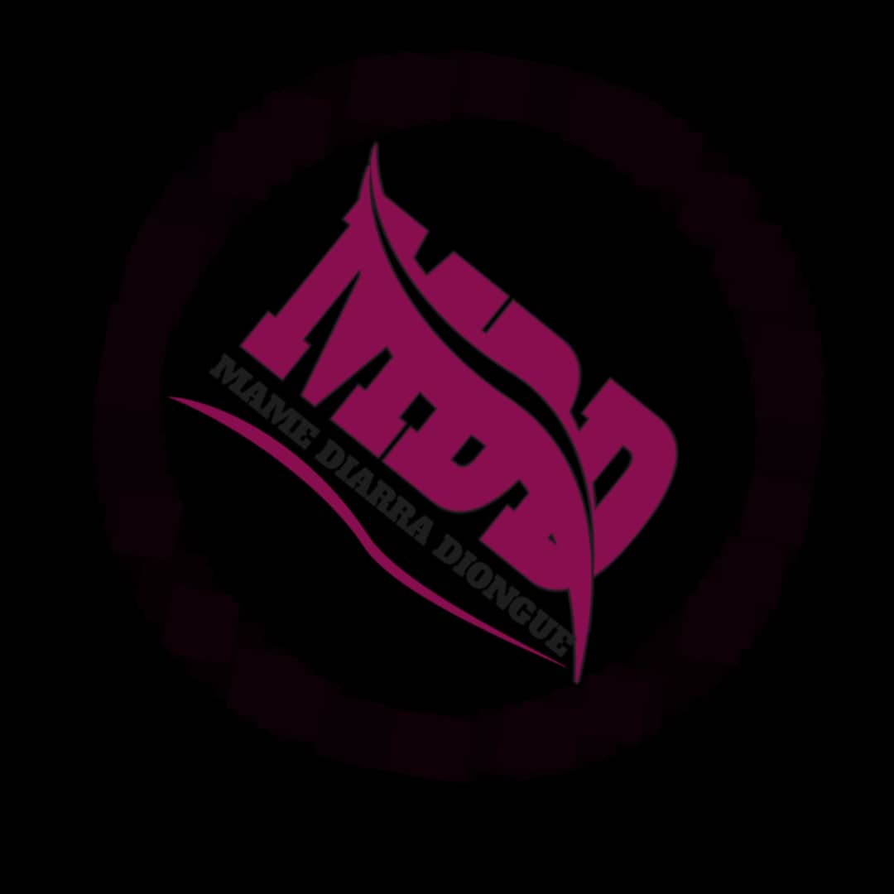

Développement web
HTML, CSS et JavaScript

Je m'intéresse à la création de solutions numériques utiles, accessibles et adaptées aux besoins des utilisateurs.
QUI SUIS-JE ?
Je m'appelle Mame Diarra Diongue. Je poursuis un parcours dans le domaine de l'informatique et du développement d'applications. J'aime apprendre, progresser étape par étape et mettre mes connaissances en pratique à travers des projets concrets.
Je souhaite approfondir mes connaissances en développement web, programmation, bases de données, systèmes et réseaux.
MON APPRENTISSAGE
Les domaines ci-dessous correspondent à mes centres d'apprentissage et de pratique.
HTML, CSS et JavaScript
Initiation et pratique de la programmation, notamment en C++.
Conception et gestion de données : domaine d'apprentissage.
Découverte et approfondissement des environnements informatiques.
MES RÉALISATIONS
Quelques projets académiques et personnels présentés dans mon portfolio.
APPLICATION WEB · IMMOBILIER
Projet de plateforme immobilière destinée au marché sénégalais : présentation de biens, recherche, espace agents et administration.
PROJET ACADÉMIQUE · ÉDUCATION
Concept de plateforme numérique pour collèges et lycées au Sénégal : suivi des notes, absences, résultats et communication avec les parents.
« Mieux suivre aujourd'hui pour mieux réussir demain. »
ÉCHANGEONS
Vous souhaitez échanger à propos d'un projet, d'une collaboration ou d'une opportunité ?
Je serai ravie de découvrir votre message.
À compléter : adresse e-mail · numéro WhatsApp · liens GitHub et LinkedIn.
Préparer un e-mail